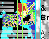
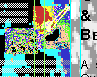

Flanders, Summer 1993
It had been raining all summer. Young Farmers were setting up a new performance. Because that year Antwerp had been elected as the European Cultural Capital (they were spending money on art!) and all the year around the major part from government support was going to dance or theater and not to computer music anyway, the Farmers decided to get involved with acting. And since a good Farmer can't create without technology, they decided to bring their stuff along, reorganize the scene a bit and at the same time promote the YFCF method (highly effective), hoping actors, directors, and managers would appreciate the contribution.
People in Flanders are looking at the future in a particular way. Though many are involved with contemporary art, either as artists or consumers, they still advocate the use of traditional means in the creation of artworks. They are unable to perceive a creative digital product as a work of art. By opposing innovations introduced by the emerging new - electronic - tools, they seem to deny that all contemporary art exists only in relation with the surrounding culture and its available media. Another feature is the common acceptance of a Fake Flemish Historical Consciousness that homogeneously depicts people here as goodhearted but witty drunkards. Most of the local literature deals with this, and so do the new theater shows and even the videos. It is close to high treason when you don't provide a lighthearted story with a couple of folk-morons in it. Totally un-Flemish.
So, with an idealistic and slightly educational intention, Young Farmers set forth to show that a lot of normal people, with an everyday job, a neat family, and a not too wild social interaction, are using very sophisticated machinery for the realization of their wildest dreams. They found material that went far beyond any of their expectations. Immediately they started working with it. The name of the project had to be The Neckhair Chronicles (some people are still puzzled about the meaning). The content ranged from telecommunications to genetics, biology, art, aeronautics, science history, and technology ... (Here's a 1.536 K QuickTime movie)
After 2 months of studiowork, Young Farmers rehearsed for the first time in an ordinary theater, on a normal stage. They had composed the music, edited the numerous videotapes that served as a backlayer for realtime processing during the show, and written the text. In cooperation with the painter-performer Bert Vervaet, they worked on their performance in a very theater-minded manner, a choice dictated by the management and the environment.
Within a couple of weeks they were ready to perform in De Singel (Antwerp - Belgium) and V2 (Den Bosch - Holland). The performance was built around a moving environment of satellite-captations and video-images. There were performers (Robin Ford, Markest Tate, and Bert Vervaet) with continuously changing identities. And there were Guy and Herbert installed at the very front of the stage, wearing lab coats and manipulating their computers like weird scientists, following the indications of director Bert Vervaet. The response was quite contradictory. For the theater lovers the whole thing was too advanced, for the cyber addicts too in-between (after all, the V2 performance festival also featured Stelarc). Still later, Young Farmers Claim Future had a welcome conversation with Alex who runs V2. The Belgian management, on the other hand, pissed by Young Farmers' independency and success, avoided all open conflict and went into hiding...so much for the Flemish goodheartedness.
Note: the audience had not understood Guy and Herbert were playing their compositions in real-time. They thought the computer screens were props, part of the scientist outfit of the two lab coat actors. Moreover, the light emitted by the screens integrated well with the scenery.
Then came a short period of self-reflection. For an artist, it is a mistake to try to reform traditional cultural institutions. You have to be a good politician or manager to do that. And in general, as we all know now:
The Message Never Comes From Within The Medium (YFCF, 1993)
The artistic answer came a couple of months later with a performance in a loft in the Farmers' hometown. Unexpected, unofficial, and subversive. It was a performance only with computers and VCR's. The whole Neckhair Chronicles had been rearranged and given a more genuine style. The musicians were the operators and process-controllers, the actors were replaced by video-tapes, their voices generated by machines. The performance itself became a statement:
Claem It
(due to a spelling error on the poster) but meant here was:
The Future!
All this material is property of Young Farmers Claim Future and may only be abused with permission:
Young Farmers Claim Future
Herbert Van de Sompel & Guy c. Jules Van Belle
Herbert.VandeSompel@rug.ac.be & Guy.VanBelle@rug.ac.be
{kind=link}
{kind=link}
{kind=link}
{kind=link}
{kind=link}